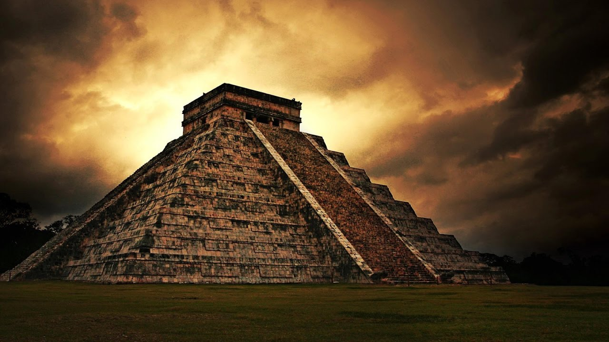

The Country Journal
Inicio
Acerca de
Contacto
Más
Patrimonios Mundiales
Patrimonios Mundiales en Africa
Patrimonios Mundiales en Asia
Patrimonios Mundiales en Europa

Patrimonios Mundiales en Centro America
Patrimonios Mundiales en Sudamerica